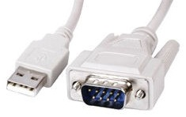

Qu'est-ce qu'un port série?
Un port série sur un ordinateur est une prise permettant de relier celui-ci à un composant électronique (imprimante, souris, téléphone portable, scanner...).
Quelles prises de l'ordinateur?
En général, de nos jours, les ordinateurs (portables ou fixes) possèdent deux prises que l'on utilise pour des composants électroniques :
Sur le système d'exploitation Microsoft Windows (toute version), les ports série (DE-9 et USB) sont désignés par les noms COM1, COM2, COM3, etc. Cela leur a valu le surnom de "ports COM", encore utilisé de nos jours.
A quoi sert un port série?
Outre l'éventuelle possibilité d'alimenter un composant matériel en électricité (selon les appareils) grâce aux connectiques de l'ordinateur, les ports séries permettent principalement de communiquer avec un appareil (imprimante, téléphone, modem, fax) via un cable. Pour communiquer avec celui-ci, il faut envoyer des données propres à l'appareil en question et qui réagira en fonction de celles-ci et pourra même renvoyer une donnée à l'ordinateur.
Comment communiquer avec un port série?
Avec l'informatique et notamment le Microsoft .Net Framework, l'utilisation des ports séries est relativement simple. En effet, selon les appareils, vous pourrez envoyer des données aussi bien sous la forme Binaire (exemple : 0011 0101 1111 1101) que sous la forme Hexadécimal (exemple : 06 A2 C7 09) ou même textuelle (exemple : AT+cmgf=1).
L'utilisation des ports séries avec SoftwareZator est d'autant plus simple grâce à des actions répondants aux besoins pour la communication avec les appareil, mais il y a tout de même une difficulté.
Quelle est la principale difficulté de communication?
Le moyen de communication avec un appareil se résume en trois méthodes : binaire, hexadécimal ou textuelle. Ceci créé déjà une première difficulté car certains périphériques (imprimantes, téléphone portable, souris, scanner...) n'accèpte que des données binaires, ou bien uniquement binaire et hexadécimal, et autre.
La seconde difficulté et qui, elle, est de taille, est de savoir quelle donnée doit être envoyé au périphérique. Si le périphérique en question a été réalisé par vous même, cette difficulté n'apparaitra pas car vous avez vous-même définit les données avec lesquels votre apparail réagira. En revanche, si vous tentez de communiquer avec une imprimante ou un téléphone portable dont vous n'êtes pas le créateur, vous ne saurez pas quelle donnée envoyer à celui-ci.
Pour surmonter cette obstacle, il faudra vous munir d'une documentation technique du fabriquant sur votre périphérique en question. Si la documentation technique n'est pas fournise avec l'appareil, il faudra essayer de la trouver sur internet. Renseignez-vous sur le site internet du fabriquant et ou contactez-les, renseigner-vous sur les forums spécialisés et n'hésitez pas à poser vos question sur ceux-ci.